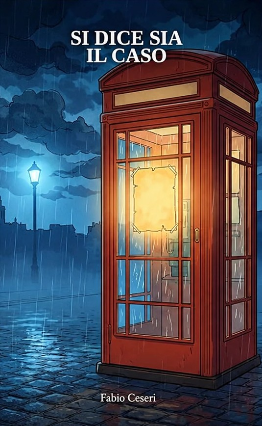
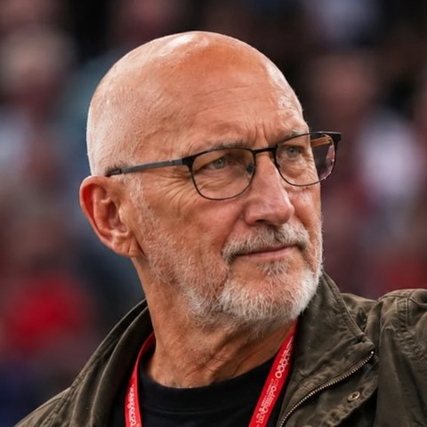

Fabio Ceseri
Non è mai davvero il caso
Una storia vera.
La possibilità di ricominciare.
eBook Kindle · disponibile anche con Kindle Unlimited
Ci sono persone che continuano a far parte della nostra vita anche quando non ci sono più. Scrivere di loro è un modo per custodire ciò che ci hanno lasciato e condividerlo con qualcuno.
Fabio Ceseri
Il libro
Si dice sia il caso nasce dalla storia vera di un amico che ho conosciuto e amato. Racconta radici spezzate, dipendenze difficili da affrontare e la possibilità di ritrovare una direzione quando sembra di averla perduta.
Ho voluto dare spazio alla sua testimonianza, alla fatica e alla speranza di una rinascita. È da questa esperienza che prende forma il primo volume di Vite ritrovate.
Il libro è disponibile su Amazon in formato eBook Kindle, anche per gli abbonati a Kindle Unlimited.
Non è mai davvero il caso
C'è qualcuno al di sopra di noi che ci ama e ha dato la vita per noi.
Fabio Ceseri
Il progetto
Una collana di storie vere: persone che sono cadute e si sono rialzate. Chi sta attraversando lo stesso buio spesso pensa di essere solo. Leggere che qualcuno ce l'ha fatta può essere il primo passo per chiedere aiuto.
Raccogliere le storie di chi ha ritrovato la propria strada, con rispetto e solo con il pieno consenso di chi le ha vissute.
Ogni storia porta con sé un'indicazione concreta: dove chiedere aiuto, subito e gratuitamente.
Presentazioni in biblioteche, parrocchie e scuole, insieme a chi ogni giorno aiuta le persone a uscire dalle dipendenze.
Tutti i diritti d'autore dei libri andranno alle persone senza dimora, attraverso Opera San Francesco per i Poveri di Milano: mense, docce, guardaroba e cure mediche, con i Frati Minori Cappuccini dal 1956.
La tua, o quella di una persona cara. Scrivimi: la leggerò con attenzione e in riservatezza. Nessuna storia sarà pubblicata senza il tuo consenso.
Se stai attraversando un momento difficile
Gli orari possono cambiare: controllali sui siti ufficiali dei servizi.
Dopo la lettura
Se vorrete leggerlo, mi farà piacere sapere che cosa vi avrà lasciato.

L'autore
Fabio Ceseri è nato a Borgo San Lorenzo, nel Mugello. Si dice sia il caso è il primo volume di Vite ritrovate. fabioceseri.it